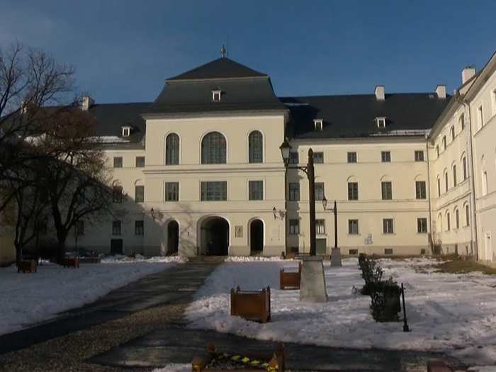
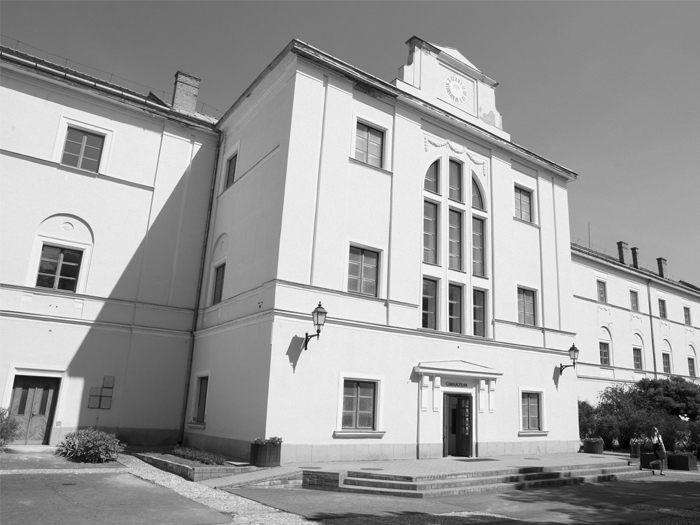
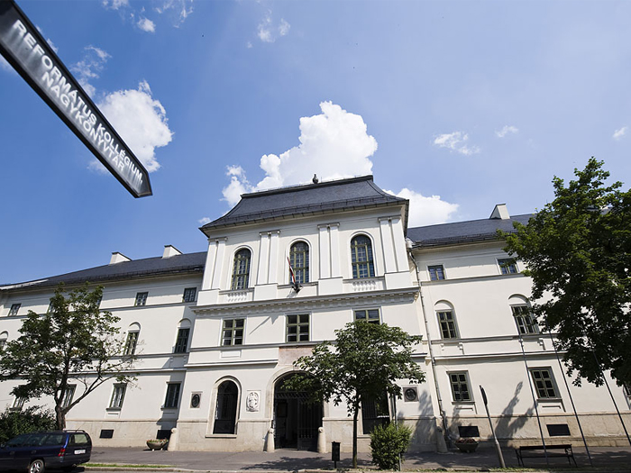
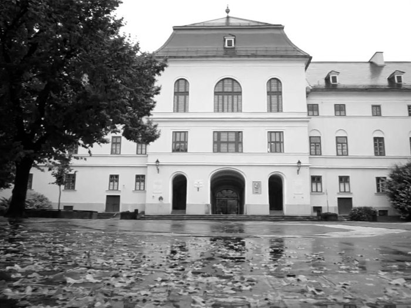

Az iskola fennállásának 486. esztendejében is rangot jelent pataki diáknak lenni. Ezen diákok közössége évszázadok óta egy nagycsalád, melynek tagjai mindenhol megtalálhatóak a világban. Itthonról, de határainkon túlról is rendszeresen "haza" látogatnak Sárospatakra és minden esztendő júniusának utolsó vasárnapján találkoznak az "alma materben." A 2005/2006-os tanévben ünnepeltük iskolánk fennállásának 475. évfordulóját, amelyről iskolatörténeti kiállítással, Jubileumi évkönyv, és CD kiadásával emlékeztünk meg.
Gimnázium
Sárospataki Református Kollégium Gimnáziuma, Általános Iskolája és Diákotthona

A Sárospataki Református Kollégium Gimnáziuma történetének legújabb időszaka 1990-től datálódik. Ekkortól ismét a református egyház irányítása alá került az iskola, melynek vezetése úgy döntött, hogy megfontolt, hosszú időszakra szóló fokozatos átmenetet hajt végre. Csak a kezdő évfolyamon, felmenő rendszerben indult meg a református tartalmú és szellemű képzés. Azóta eltelt több mint két évtized, ma már református iskola vagyunk, az ősöktől szent hagyományként örököltük a lelki nevelés feladatát. Iskolánkban négy évfolyamos különböző tagozatos képzések, valamint öt évfolyamos magyar-angol két tanítási nyelvű gimnáziumi képzés folyik. Az 1987/88-as tanévben beindult magyar-angol két tanítási nyelvű oktatásban résztvevők a 9. évfolyamon nyelvi előképzésben részesülnek, s ezt követően négy éven át több tantárgyat is angol nyelven tanulnak. Eddig 25 évfolyam tanulói érettségiztek ezekben az osztályokban. Az érettségivel egy időben megszerezték angol nyelvből a felsőfokú nyelvvizsgát, felvételi eredményeik kiemelkedők. Több mint nyolcvan százalékuk tanul jelenleg az ország legszínvonalasabb felsőoktatási intézményeiben.

Az angol - magyar két tanítási nyelvű képzés mellett a négy évfolyamos emelt szintű angol nyelvi tagozatos osztályunk is nagy érdeklődésre tart számot. Második idegen nyelvként olasz és német nyelv választható. Az angol nyelvoktatás színvonalát emelik az anyanyelvű lektorok, akik tanórai munkájuk mellett, az általuk szervezett különféle programokkal segítik az érdeklődő tanulókat nemzeti kultúrájuk elmélyültebb megismerésében. Az eredményes munka bizonyítéka, hogy sokan tesznek sikeres nyelvvizsgát a gimnáziumi évek alatt.

2007. szeptemberétől emelt szintű biológia-kémia képzést is indítottunk.
Az ide felvételt nyert tanulók a két kiemelt tantárgyat emelt óraszámban tanulják.
2011. szeptemberétől folyik az emelt szintű matematika-informatika képzésünk is, erősítve a természettudományos oktatást.
Az iskola - régi hagyományaihoz híven - fő feladatának tekinti a tehetséges gyermekek felkutatását és a velük való foglalkozást, a tehetséggondozást. Szép számmal vesznek részt tanulóink az Útravaló Ösztöndíjprogramban, amelyben mentor tanáraik segítségével, egyéni foglakozásokkal segítve juthatnak el az érettségiig. A délelőtti fakultációs órák, a két tanítási nyelvű osztályok emelt szintű órái, a délutáni szakkörök egy-egy tantárgy mélyebb megismerését teszik lehetővé, felkészítik tanulóinkat a szaktárgyi versenyekre, a kétszintű érettségire.

Az iskola működését jól felszerelt biológiai, kémiai, fizikai és számítástechnikai előadótermek, két nyelvi laboratórium, két tornaterem, műfüves sportpálya, jól felszerelt csónakház segítik. Fontos, nélkülözhetetlen része gimnáziumunk életének az iskolai könyvtár, az olvasótermek; megtalálhatunk benne minden olyan könyvet, amelyek ismereteink elmélyítéséhez szükségesek.
2004. szeptember 1-jén 22 tanulóval, 3 tanítóval és 2 óraadóval elkezdődött az oktatás az általános iskolában. Az iskola alulról építkező, 8 osztályos általános iskola. Ma már az első két évfolyamán az újonnan bevezetett magyar-angol két tanítási nyelvű illetve emelt óraszámú matematika tagozatos osztályokkal működik.